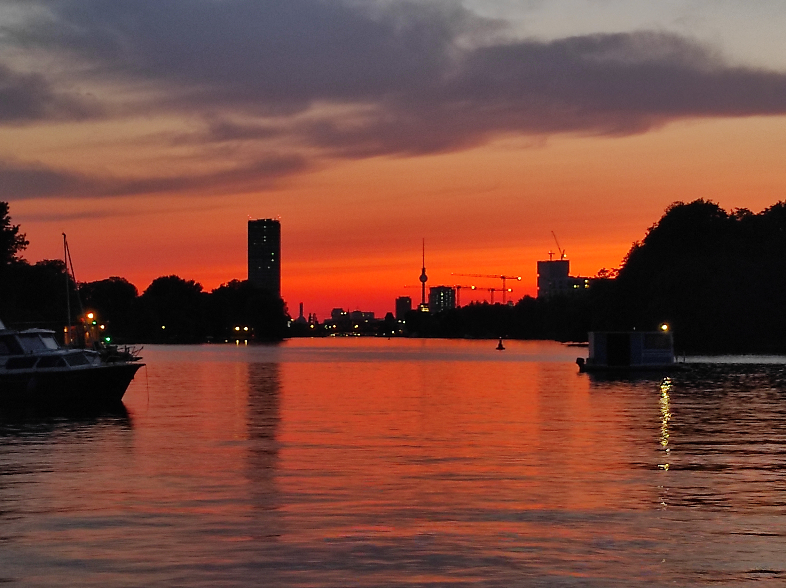

Berlin is the place where I currently live and it has been like that for almost the last ten year. It's the city I have chosen for my european come back after one year between Australia and south east Asia. Why did I move to Berlin is one of the question I get asked the most and although I do not have a clear answer to it, I knew that once I moved here it would have been for a while.
The city is a place that makes you feel comfortable, the cost of living is pretty low compared to other european capitals and there is a plenty of interesting people with impressive life stories and different backgrounds everywhere. Berlin is a sort of love affair that can not turn into something more, at least for me. It's a non-lieu that grows like ivy, developing its own identity from the fact of not having a clear identity itself.

Culturally is absolutely wide and various. Every artistic movement can find its own dimension and no matter what people are into it is easy to find someone into the same things. The darkness that cover the city especially during the winter period and the lack of light makes Berlin a place where it is hard to adapt completely, where people pretty often feel lonely and have to find a way to deal with it.
Berlin definitely helped me to grow as a human. It gave me all the space I needed and it left me quiet, working on my main interests. It's the city where I found the highest number of inspiring life stories I came across so far and crazy nights out I ended up doing something completely unexpected from what I was doing only half an hour before.

Despite of its massive techno scene, If I have to think about my personal Berlin soundtrack I think a huge part of it would be related to ambient music. In particular I like to remember Kraftwerk Autobahnand the nice memories I had relocating from one flat to the next and having to drive up and down from Italy in order to bring up my staff. Bowie's trilogy ("Low", "Heroes" and "Lodgers") written between 1977 and 1979 also seems to transpire through the walls of the city, backtracking the movies of Wim Wenders, "Wings of Desire" in particular. Last but not least a movie about the music scene of the late '70 called "Berlin B-Movie" and looking back deeper a little bit in the past, the memories of the expat Christopher Isherwood in his "Goodbye to Berlin" that also inspired the eclectic musical "Cabaret", a great way to have a taste of how was life during the Weimar Republik, just before the awful nazis came to power.
An hidden jam and one of my favourite spot in Berlin is Comenius garten. The place is located in Neukölln, in an area called Böhmisches Dorf. The village was a former bohemian village, created in 1737 from a group of exiled bohemians people from Moravia, a region located in the western side of the actual Czech Republic. There is no direct connection between Bohemian people from Bohemia and the famous bohemian lifestyle, which is a term that derives from the french bohème and was referring mostly to Romani people originally based in Bohemia that afterwards moved to the Latin district of Paris. Comenius was a philosopher, theologian and pedagogue born also in Moravia, who mostly focused on structuring the educational system across Europe, making education more accessible to everyone and believing heavily in the connection between nature, religion and knowledge ("knowledge is born from nature and nature from God"). Despite of being a religious refugee and having suffered the loss of two children, he always carried on with his lifegoal of making instruction widely accessible to everyone and nowadays, it is considered by certain people the father of the modern education.
Bertold Brecht was one of the key figure of the german theather during the Weimar Republik. Together with Erwin Piscator, he invented the epic theatre, a style of theater that emphazises the relation between form and content seeking the engagement of the audience, instead of focusing on the scope. This way of making theatre goes in contrast with Gesamtkunstwerk, an idea from Richard Wagner, who was mostly seeing theatre as a "total artwork". The audience engagement is found through certain techniques such as Verfremdungseffekt where the same actors are shuffled and the set changed during the various acts. The actors also have the freedom to talk directly to the audience breaking the "fourth wall", the hypothetical wall that divides the audience from the scene and something as an external narrator is sometimes used in the piece. Brecht lived in Berlin during the Weimar Republik and after having fled the country during the Nazi regime, came back to east Germany in his final years, spending most of his time in his house in Buckow, a very nice little town in the northeast of Berlin that I recently had the chance to visit and where, as far as I know, it is still possible also to visit the house where he lived.
Dadaism was an anti-establishment/anti-capitalistic movement that developed mostly in central Europe (Zurich, Berlin and New York are seen as the main center) in the years around 1915 together with the Great War. Dada was born to tackle aesthetic and as a way to somehow "make fun of the rich" and of their artistic taste. It was strongly inspired by industrialization and made art out of almost every possible thing, including everyday items. The origin of the name has various different theories, the most convincing one asserts that it is nothing more than a children onomatopoeic sound. Between the main exponents in Berlin there are Richard Huelsenbeck, the first who produced the first dada manifesto, Hannah Höch and Raoul Hausmann. Berliners dada seemed to be less art-disruptive and more politically focused in comparison with the Dadas of other major cities.
Berlin has a strong identity that swung from the right to the left side of the map as we know it or from the left side to the right of the political spectrum to oversimplify it. The whole story takes over 30 years and it ends on a cold night of November (the 9th of 1989 to be precise) when thousands of people jumped from one side to the other of a crumbling wall shouting "nie wieder". Despite what people think about DDR (Deutsche Demokratische Republik) nowadays, there are still a bunch of things that belong to an era that it is now gone and will never come back and to the category of fascinating things part of the past, like Trabant, Pfeffi or Lipsi dance. As the name self-explains it, Lipsi dance was born in Leipzig in 1959, in an attempt to discredit and take a stance against western dancing habits (mostly rock'n'roll) and to give something unique and traditional to the East of Germany. The idea seemed to me curious enough to the point that I went to listen to some of the music and I found Lipsi not so different from the western music of that times as we know it. It's peculiarity comes mostly from the tempo 6/4 but the melody itself is something that slightly sounds like a mix of ragtime jazz, classical and folk music. Once again I think it is important to underline the power of music as a form of congregation and as something that almost every government uses to involve people, create a common cultural ground and reinforce the power of the nation as a public space.
Paul Dahlke was a physician and an homeopath with a strong interest towards spirituality. In fact Dahlke can be seen as one of the precursor of Buddhism in Germany and in Berlin in particular, where at the beginning of the XX century he funded the first Buddistische Haus that I had the chance to visit on a mild spring Sunday. After the graduation he travelled extensively around Asia and while in Ceylon (actual Sri Lanka) he became fascinated with Buddhism, mainly after reading the works of Schopenhauer on the topic. Back in Germany as a Buddhist he first attempted to build the monastery on the island of Sylt and after realising that the site was a bit too isolated he opted for a property that he bought in Frohnau. He finished the works in 1924 and subsequently moved in. He spent the rest of his life mostly focusing on Buddhism reading and publishing various works on the topic. He passed away in his property on a full moon night because of heart failure after having suffered a tropical fever that he contracted while in Java.
I started to notice that the girl I put my eyes on had also a vague interest in me the day we both accidentally saw each other is Sarah's flat. Sarah at that time was subrenting a huge flat on two floors (must have been around 100m2 in total) in one of the former eastern neighbourhood of the capital of Germany. Nobody really had the certainty that the flat was located in the former east Berlin, since back in the years, the wall was running like a sort of a crazy snake and it was hard for the most to know exactly what belongs to what but that was the impression we all came up with. All in this case is a very generic term since during the time I was hanging out there, I met so many different people and now I really find hard to remember most of the names but apart from the locals, I remember lots of people who came from eastern countries, like former soviet countries, some latinos and a bunch of so called mediterranean people, which I don't know exactly what that means but this is how they were called. Sarah use to like to invite random people to her place and to give temporary accomodation to those who were struggling to find a place to stay. I remember in particular this guy called Damon, a writer from the south of England who was mostly living out of small casual jobs. He was a young man who recently decided to move to Berlin because he found something to do in a local radio station. Damon was one of the first people I have got to know there, except from Sarah of course. Sarah was 10 years younger than me and sometimes I have to say I was a bit overwhelmed from all her enthusiasm of being still somehow a teenager that got hit by a lucky strike during her first months in the city. To be honest I have never really found out how she found the flat but I guess it doesn't really matter. I think in order to live there, she had to do housekeeping, water the plants, take care of the mail and occasionally take out a dog named Sascha, that belonged to the relatives of the people that owned the flat. The name written on the bell said Schmidt and as far I knew, those people owned a countless number of flats in Berlin that they probably did not even care anymore and the only thing they wanted, it was to find some good and reliable person to keep the place open and alive. Sarah in fact was that kind of person but still too young, too fragile and too eager to discover pleasure and get lost in the night life of the capital for them to be entirely sure she could cause no damages.
We first saw each other in a bar in Leipzig the day before. As always I was lost in my thoughts and while staring into blank space, I casually look towards this girl sitting alone in a table of 10 people at least. The table is full of jackets, scarfs and so on. She smiles me back politely and I feel terribly ashamed since these things keep happening at that point that I started to wonder if I am aware of whom I am looking to or if I am driven by a sort of automatic pilot during those moments. The radio is playing "Stolen Moments", I think it is Grant Green version but I am not entirely sure. I suddenly move my sight away without smiling back to her and start to look at the bartender to pretend I am acting at least a little bit more casual. Led by curiosity, after a few minutes I decide I want to give a look again, just to know exactly how she looks like. She is blonde, white-pale skin, green eyes and maybe from Leipzig too. She is probably having a night out with a group of friends although I can not understand why all her friends left her alone at the same time. She is wearing a pretty neutral black long sleeve tshirt and a pair of black paints. Not much to say also regarding make up, rings of any other sort piece of cloth, since she is not wearing anything particularly catchy, just a natural pure simple beauty (to be comtinued).